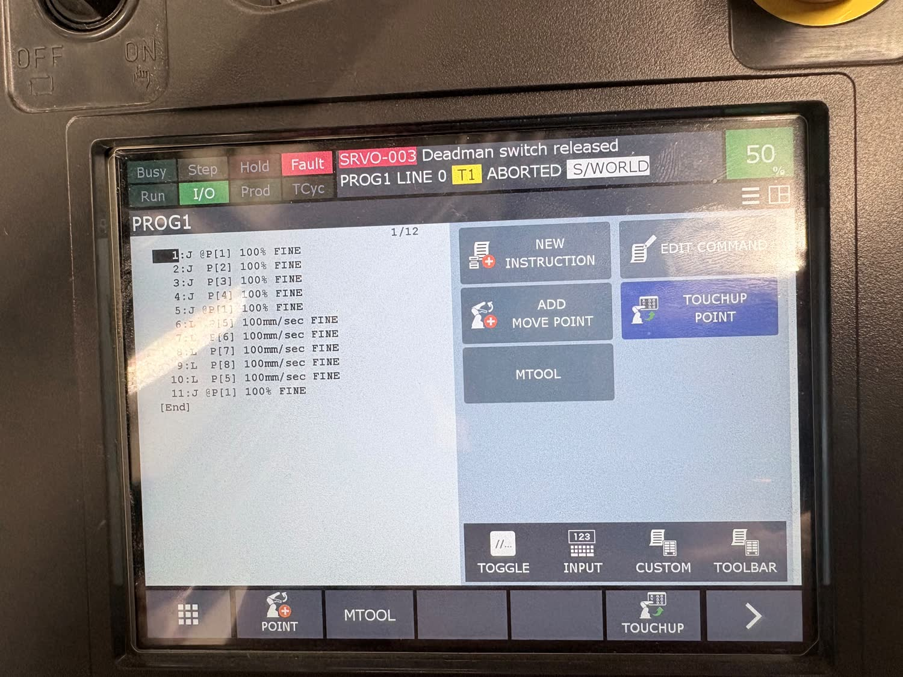
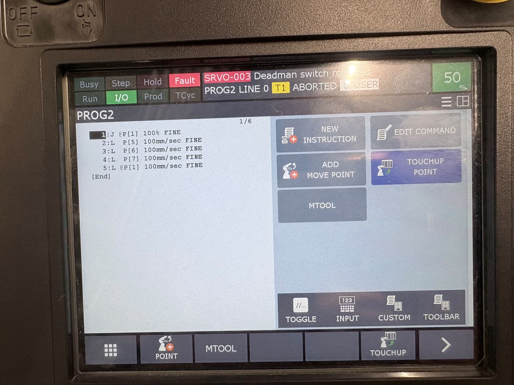
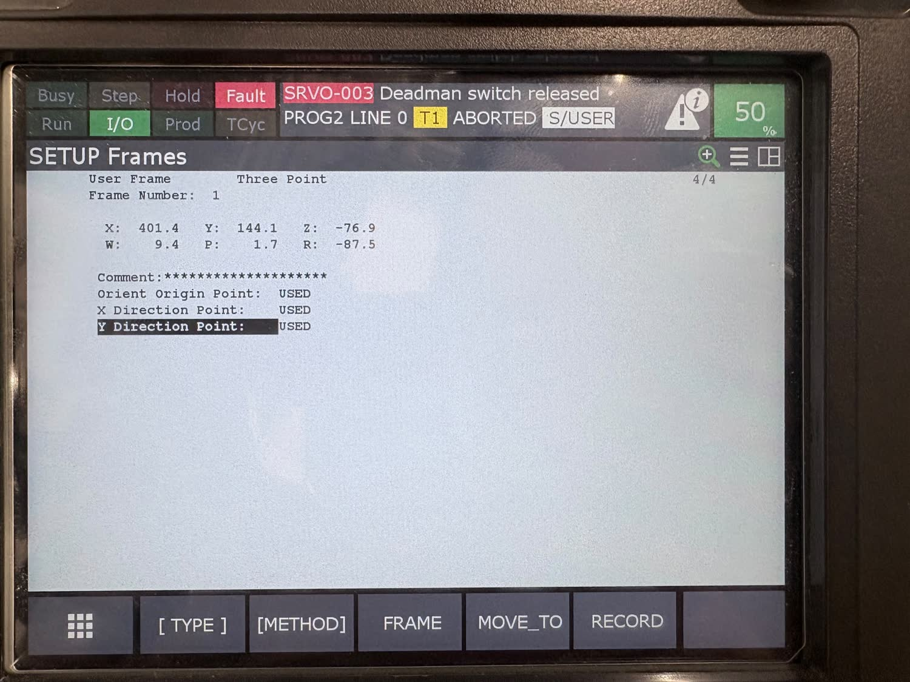

Teaching a FANUC Arm, from RoboGuide to the Real Cell
Six lab exercises that start in simulation and finish with my hands on a teach pendant. I built a cell in FANUC RoboGuide, wrote programs on the virtual pendant, imported a table from the CAD library and looped a trace around its edges with a register and a FOR loop. Then the same ideas on a real six-axis FANUC: two taught programs, and a user frame established by the three-point method on a jig sitting almost square to nothing.
Industrial arms are still programmed by pointing at things.
Almost every industrial manipulator in service is programmed the same way it was thirty years ago. An operator jogs the robot to a pose, records it, and strings the recorded poses into a program. Offline tools have got much better, but a simulated cell is only worth something if the poses it produces survive the trip onto hardware whose geometry never quite matches the model.
That gap is what this module is built around. Six exercises, arranged so each one is a prerequisite for the next, running from building a cell in RoboGuide to setting frames on a real robot. The point was not to invent anything. It was to get fluent with the tools an integrator actually touches, and to find out first-hand where simulation and hardware stop agreeing.
A cell, a table, and a loop around its edges.
RoboGuide gives you a six-axis arm and a virtual pendant that mirrors the real one closely enough that the muscle memory transfers. I took the defaults through all eight steps of the cell wizard and flange type 1, then spent the first two exercises just moving things: dragging the tool centre point along an axis, holding shift to rotate about it instead, and typing exact coordinates into the position screen when I needed a pose I could get back to.
Then the table. It comes out of the RoboGuide CAD library, and the only real constraint is that it has to sit inside the reachable workspace, which is easy to get wrong and obvious once you do. Four points on the edges gives you a rectangle. Repeating it needs two things that are worth naming: a register, which is just a numbered variable the controller owns, and a FOR / ENDFOR pair around the four moves. Both have to be inserted above the existing lines, which is its own small lesson in pendant editing.
Two programs, and what the interpolation does to them.
On the real robot everything happens in T1 with the override at 50 percent, which is what
you use when people are inside the fence. The enable switch on the pendant has to be held
for the arm to move at all. Let go and you get SRVO-003 Deadman switch released
and the program aborts, which is exactly what you see in the screenshots below, because I had
to let go of the pendant to take the photograph.
The first program traces the same rectangle twice, deliberately. Lines 1 to 5 use
joint moves at 100 percent through P[1] to P[4]. Lines 6 to 10 use
linear moves at 100 mm/sec through P[5] to P[8]. Every instruction ends in
FINE, so the arm settles on each pose instead of blending through it.
| Line | Instruction | What it does |
|---|---|---|
| 1 to 5 | J P[1] to P[4], back to P[1], 100% | Joint interpolation, each axis driven independently |
| 6 to 10 | L P[5] to P[8], back to P[5], 100mm/sec | Linear interpolation, tool held on the straight segment |
| 11 | J P[1], 100% | Return home |
Eleven lines in all, every one terminated FINE, running with the World frame active.
Running both halves back to back makes the difference impossible to miss. The joint moves visit all four corners but the tool swings out in an arc between them, because each axis is just travelling from its start angle to its end angle on its own schedule. Only the linear half actually draws a rectangle. The corners are the same points either way, which is the part that catches people out.


Three corners are enough to describe a jig.
The last exercise is the one that actually matters in a real cell. A workpiece almost never sits square to the robot base, and you do not want to carry that offset around in your head or bake it into every taught position. So you teach a frame. The three-point method asks for three poses you can physically identify: the origin at one corner of the jig, a point out along +X at the next corner, and a point along +Y at the third.
W = 9.4 P = 1.7 R = −87.5 orientation in degrees, and R is the one that matters
That R of about minus 87.5 degrees is the whole point of the exercise. The jig was sitting very nearly a quarter turn away from the robot base, while W and P stayed within a couple of degrees of zero, which says the surface itself was close to level. With the frame taught and activated, the jog keys move along the jig instead of along the base, and a position recorded afterwards means something a person looking at the part would recognise. Without it, every one of those positions would quietly carry that rotation.

One thing worth knowing before you do this: activating a frame does not move positions you already recorded in a different one. Teach the frame first, then the positions that depend on it.
Written up as an IEEE report.
I wrote the module up properly, in IEEE conference format: the setup, the method for each exercise, both taught programs transcribed line by line, the measured frame, and what I observed running them. It also says plainly what the work does not establish. I reported a taught frame and two taught programs, but I never measured how closely the executed path follows the intended rectangle. That needs external metrology, which the module did not include. The obvious next step would be teaching the frame several times over and reporting the spread, which would separate operator error from the machine's own repeatability.
Whose lab this is.
The module, the exercise structure and the instructional material are the work of Rajesh S. Aouti, Dr. Cynthia Pickering and Dr. Sangram Redkar, delivered as part of the PSMART hands-on session series at ASU. The RoboGuide cell configuration and the order of the six exercises follow their material. What is mine is the work of doing them, the programs and the frame taught on the robot, and the report.
What I took away from it.
Specifying motion is the easy half. I could describe the rectangle I wanted in a sentence, and the pendant took about a minute to accept it. What took the time, and what the exercises are really about, is establishing the frames that make the specification mean what I intended. The same four corners give you an arc or a rectangle depending on one interpolation letter, and the same recorded position means two different places depending on which frame was active when you pressed record. On a shop floor that distinction is the difference between a part and scrap.